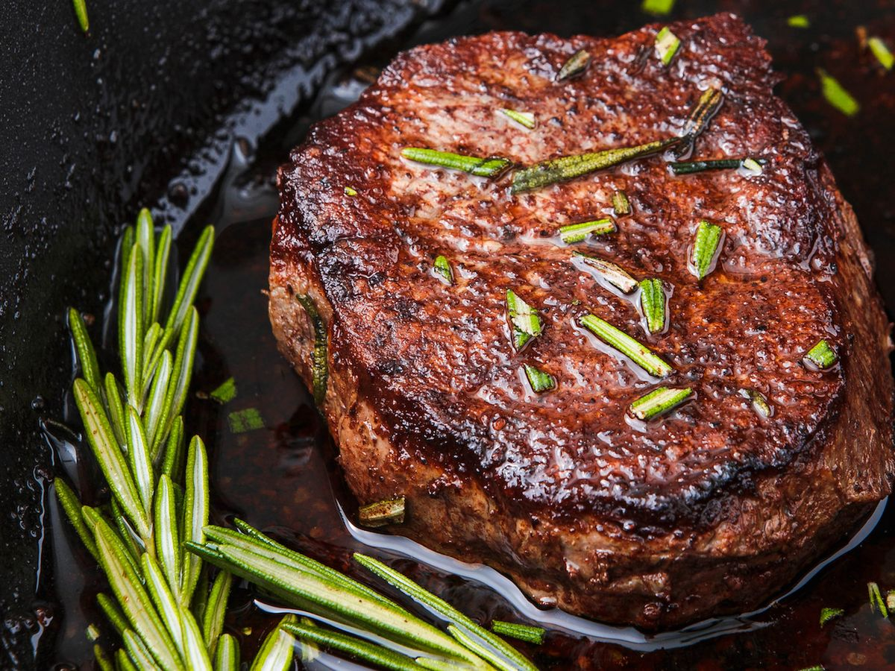

Description
This is the best filet mignon recipe for an elegant dinner for two. Red wine and balsamic vinegar make a wonderfully rich sauce to serve with the steak. Delicious with steamed asparagus and baby red potatoes.
Ingredients
- Steaks: You'll need two filet mignon steaks for this restaurant-worthy recipe.
- Seasonings: This filet mignon is simply seasoned with salt and pepper.
- Balsamic vinegar: Of course, you'll need balsamic vinegar. It's the star of the show!
- Wine: Choose a dry red wine, such as cabernet sauvignon.
Steps
- Season the steaks: Sprinkle the filet mignon steaks with salt and pepper.
- Sear the steaks: Sear the steaks in a very hot pan until they're browned on both sides.
- Make the sauce: Reduce the heat to medium-low, then add the vinegar and wine. Cover and cook for about four minutes. Flip the steaks, baste with the sauce, and continue cooking for about four more minutes.
- Serve the steaks: Place the steaks on two warmed plates. Spoon the sauce over the meat and serve immediately.
Back to main page